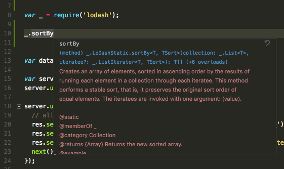

JavaScript in VS Code
Visual Studio Code provides IntelliSense, debugging, and powerful editor features for JavaScript. VS Code uses the JavaScript language service to make authoring JavaScript easy. In addition to syntactical features like format, format on type and outlining, you also get language service features such as Peek, Go to Definition, Find all References, and Rename Symbol.

IntelliSense
VS Code
IntelliSense
is intelligent code completion, parameter info, and member
lists. VS Code provides IntelliSense using TypeScript type
declaration (typings) files (for example,
node.d.ts) to provide metadata about the
JavaScript based frameworks you are consuming in your
application. Type declaration files are written in TypeScript
so they can express the data types of parameters and
functions, allowing VS Code to provide a rich IntelliSense
experience.
Thanks to a feature called
Automatic Type Acquisition you as a user do not
have to worry about these type declaration files. VS Code will
install them automatically for you.
For the details of how JavaScript IntelliSense works, including being based on type inference, JsDoc annotations, TypeScript declarations, and mixing JavaScript and TypeScript projects, see the JavaScript language service documentation.
When type inference does not provide the desired information, type information may be provided explicitly with JSDoc annotations. This document describes the JSDoc annotations currently supported. In addition to objects, methods, and properties, the JavaScript IntelliSense window also provides basic word completion for the symbols in your file.
VS Code ships with the most stable version of the JavaScript
language service. The same language service powers both
JavaScript and TypeScript, so if you want to use a newer
version, you can define the typescript.tsdk
setting
to point to a directory containing the TypeScript
tsserver.js file. See more details
here.
Automatic Type Acquisition
VS Code JavaScript IntelliSense for third-party libraries and
modules is powered by *.d.ts type declaration
(typings) files coming from the
npmjs type declaration
file repository.
In this image you can see IntelliSense, including the method signature, parameter info, and the method's documentation, for a popular library called lodash.

Type declaration files are automatically downloaded and
managed by Visual Studio Code for packages listed in your
project's package.json.
"dependencies": {
"lodash": "^4.17.0"
}
If you are using Visual Studio Code 1.8+, you can alternately
explicitly list packages to acquire type declaration files for
in your jsconfig.json.
"typeAcquisition": {
"include": [
"lodash"
]
}
Now when you require or import
lodash, VS Code will use the automatically
downloaded type declaration files for the library to provide
rich Intellisense. Most common JavaScript libraries have type
declaration files available. You can search for a library's
type declaration file package using the
TypeSearch
site.
Fixing NPM not installed warning for Automatic Type Acquisition
Automatic Type Acquisition (ATA) uses npm to install and manage Type Declaration (typings) files. To ensure that Automatic Type Acquisition works properly, first ensure that you have npm installed on your machine.
If you have npm installed but still see a warning message, you
can explicitly tell VS Code where npm is installed with the
"typescript.npm" setting. This should be set to
the full path of the npm executable on your machine, and this
does not have to match the version of npm you are using to
manage packages in your workspace.
typescript.npm requires TypeScript 2.3.4+.
JavaScript Project (jsconfig.json)
The presence of a
jsconfig.json
file in a directory indicates that the directory is the root
of a JavaScript project. jsconfig.json specifies
the root files and the options for the language features
provided by the
JavaScript language service. For common setups a jsconfig.json file is not
required, however, there are situations when you will want to
add a jsconfig.json.
- Not all files should be in your JavaScript project (for example, you want to exclude some files from showing IntelliSense). This situation is common with front-end and back-end code.
-
Your workspace contains more than one project context. In
this situation, you should add a
jsconfig.jsonfile at the root folder for each project. - You are using the TypeScript compiler to down-level compile JavaScript source code.
Location of jsconfig.json
To define our code as a JavaScript project, create
jsconfig.json at the root of your JavaScript code
as shown below. A JavaScript project is the source files of
the project and should not include the derived or packaged
files (such as a dist directory).

In more complex projects, you may have more than one
jsconfig.json file defined inside a workspace.
You will want to do this so that the source code in one
project does not appear in the IntelliSense of another
project.
Illustrated below is a project with a client and
server folder, showing two separate JavaScript
projects:

Writing jsconfig.json
Below is a simple template for jsconfig.json file
which defines the JavaScript target to be
ES6 and the exclude attribute
excludes the node_modules folder. You can copy
and paste this code into your jsconfig.json file.
{
"compilerOptions": {
"target": "ES6"
},
"exclude": [
"node_modules",
"**/node_modules/*"
]
}
The exclude attribute tells the language service
which files are and are not part of your source code. If
IntelliSense is slow, add folders to your
exclude list (VS Code will prompt you to do this
if it detects slow completions). You will want to
exclude files generated by a build process (such
as a dist directory). These files will cause
suggestions to show up twice and will slow down IntelliSense.
You can explicitly set the files in your project using the
include attribute. If no
include attribute is present, then this defaults
to including all files in the containing directory and
subdirectories. When a include attribute is
specified, only those files are included.
Here is an example with an explicit
include attribute:
{
"compilerOptions": {
"target": "ES6"
},
"include": [
"src/**/*"
]
}
The best practice, and least error prone route, is to use the
include attribute with a single
src folder. Note that the file paths in
exclude and include are relative to
the location of jsconfig.json.
See
here
for the full documentation of jsconfig.json.
Note:
jsconfig.jsonis the same as atsconfig.jsonfile, only withallowJSset to true. See the documentation fortsconfig.jsonhere to see other available options.
Debugging
VS Code comes with great debugging support for JavaScript. Set breakpoints, inspect objects, navigate the call stack, and execute code in the Debug Console. See more about debugging here.
Debug Client Side
You can debug your client side code using a browser debugger such as Debugger for Chrome, Debugger for Edge or Debugger for Firefox.
Debug Server Side
Debug Node.js in VS Code using the built-in debugger. Setup is easy and you can read a tutorial for Node.js debugging here.
Type Checking and Quick Fixes for JavaScript Files
VS Code allows you to leverage some of TypeScript's advanced type checking and error reporting functionality in regular JavaScript files. This is a great way to catch common programming mistakes. These type checks also enable some exciting quickfixes for JavaScript, including add missing import and add missing property.

TypeScript can infer types in .js files same as
in .ts files. When types cannot be inferred, they
can be specified using JSDoc comments. You can read more about
how TypeScript uses JSDocs for JavaScript type checking
here.
Type checking of JavaScript is optional and opt-in. Existing JavaScript validation tools such as ESLint can be used alongside the new built-in type checking functionality.
You can get started with type checking a few different ways depending on your needs.
Per file
The easiest way to enable type checking in a JavaScript file
is by adding // @ts-check to the top of a file.
// @ts-check
let easy = 'abc'
easy = 123 // Error: Type '123' is not assignable to type 'string'
Using // @ts-check is a good approach if you just
want to try type checking in a few files but not yet enable it
for an entire codebase.
Using a Setting
To enable type checking for all JavaScript files without
changing any code, just add
"javascript.implicitProjectConfig.checkJs": true
to your workspace or user settings. This enables type checking
for any JavaScript file that is not part of a
jsconfig.json or
tsconfig.json project.
You can opt individual files out of type checking with a
// @ts-nocheck comment at the top of the file:
// @ts-nocheck
let easy = 'abc'
easy = 123 // no error
You can also disable individual errors in a JavaScript file
using a // @ts-ignore comment on the line before
the error:
let easy = 'abc'
// @ts-ignore
easy = 123 // no error
Using a JSConfig or TSConfig
To enable type checking for JavaScript files that are part of
a jsconfig.json or tsconfig.json,
simply add "checkJs": true to the project's
compiler options:
jsconfig.json:
{
"compilerOptions": {
"checkJs": true
},
"exclude": [
"node_modules",
"**/node_modules/*"
]
}
tsconfig.json:
{
"compilerOptions": {
"allowJs": true,
"checkJs": true
},
"exclude": [
"node_modules",
"**/node_modules/*"
]
}
This enables type checking for all JavaScript files in the
project. You can use // @ts-nocheck to disable
type checking per file.
JavaScript type checking requires TypeScript 2.3. If you are unsure what version of TypeScript is currently active in your workspace, simply run the TypeScript: Select TypeScript Version command to check.
Global Variables and Type Checking
Let's say that you are working in legacy JavaScript code that uses global variables or non-standard DOM APIs:
window.onload = function() {
if (window.webkitNotifications.requestPermission() === CAN_NOTIFY) {
window.webkitNotifications.createNotification(null, 'Woof!', 'üê∂').show()
} else {
alert('Could not notify')
}
}
If you try to use // @ts-check with the above
code, you'll see a number of errors about the use of global
variables:
-
Line 2-Property 'webkitNotifications' does not exist on type 'Window'. -
Line 2-Cannot find name 'CAN_NOTIFY'. -
Line 3-Property 'webkitNotifications' does not exist on type 'Window'.
If you want to continue using // @ts-check but
are confident that these are not actual issues with your
application, you have to let TypeScript know about these
global variables.
To start,
create a jsconfig.json
at the root of your project:
{
"compilerOptions": { },
"exclude": [
"node_modules",
"**/node_modules/*"
]
}
Then reload VS Code to make sure the change is applied. The
presence of a jsconfig.json lets TypeScript know
that your Javascript files are part of a larger project.
Now create a globals.d.ts file somewhere your
workspace:
interface Window {
webkitNotifications: any;
}
declare var CAN_NOTIFY: number;
d.ts files are type declarations. In this case,
globals.d.ts lets TypeScript know that a global
CAN_NOTIFY exists and that a
webkitNotifications property exists on
window. You can read more about writing
d.ts
here. d.ts files do not change how JavaScript is
evaluated, they are used only for providing better JavaScript
language support.
Linters
A linter is a tool that provides warnings for suspicious looking code. VS Code supports linters through extensions. Linters provide warnings, errors, and light bulb actions.
VS Code provides support for JavaScript linters, including ESLint, JSHint and StandardJS. If enabled, the JavaScript code is validated as you type and you can navigate to reported problems and fix them inside VS Code.

Tip: In the above example, the error comes from
eslint. Error messages will be prefixed (see above[eslint]) by the originator of the message. Error messages from the JavaScript language service are prefixedjs.Tip You can disable default JavaScript validation by setting
"javascript.validate.enable": falsein your settings.
Tip: This list is dynamically queried from the VS Code Marketplace. Read the description and reviews to decide if the extension is right for you.
A linter extension may require an external tool. The steps below show how to setup ESLint. The process is similar for other linters.
-
Install the linter globally or inside the workspace folder
that contains the JavaScript code to be validated. For
example, using
npm install -g eslint. - Install the ESLint extension.
-
Create a
.eslintrc.jsonfile in the root of your workspace to configure the linter. You can useeslint --initto create an initial version of the.eslintrc.jsonfile.
Tip: You get IntelliSense and hovering inside the
.eslintrc.jsonfile.Tip: The linter is enabled after installation. You can disable a linter with the corresponding
.enablesetting. For ESLint, this would be setting"eslint.enable" : false.
It is recommended that you enable the linter rules that warn
about undefined and unused variables. To do this, put the
following options in your .eslintrc.json file.
"no-undef": 1,
"no-unused-vars": 1,
You can also control when a linter runs with the linter
.run setting. The two options are the default
onType after each key stroke and
onSave after you save your file.
Here are a few useful resources when using ESLint.
Snippets
VS Code has several built-in snippets that will come up as you
type or you can press
kb(editor.action.triggerSuggest) (Trigger Suggest) and you will see a context specific list of suggestions.
Tip: You can add in your own snippets for JavaScript. See User Defined Snippets to find out how.
You may not want to show snippets. You can disable them by
setting editor.snippetSuggestions to
"none" in your
settings
file. If you'd like to see snippets, you can specify the order
relative to suggestions; at the top ("top"), at
the bottom ("bottom"), or inlined ordered
alphabetically ("inline"). The default is
"inline".
You can enable tab completions with
editor.tabCompletion setting. After typing the
prefix of a snippet, press kbstyle(Tab) to insert
it.
Use Next Generation JavaScript
Run Babel inside VS Code
The Babel transpiler turns
ES6 files into readable ES5 JavaScript with Source Maps. You
can easily integrate Babel into your workflow
by adding the configuration below to your
tasks.json file (located under the workspace's
.vscode folder). The
isBuildCommand switch makes this task the
Task: Run Build Task gesture.
isBackground tells VS Code to keep running this
task in the background. To learn more, go to
Tasks.
{
"version": "0.1.0",
"command": "${workspaceRoot}/node_modules/.bin/babel",
"isShellCommand": true,
"tasks": [
{
"args": ["src", "--out-dir", "lib", "-w", "--source-maps"],
"taskName": "watch",
"suppressTaskName": true,
"isBuildCommand": true,
"isBackground": true
}
]
}
Once you have added this, you can start
Babel with the
kb(workbench.action.tasks.build) (Run Build Task) command and it will compile all files from the
src directory into the
lib directory.
Tip: For help with Babel CLI see the instructions here. The example above uses the CLI option.
Use the TypeScript Compiler
One of the key features TypeScript provides is the ability to use the latest JavaScript language features, and emit code that can execute in JavaScript runtimes that don't yet understand those newer features. With JavaScript using the same language service, it too can now take advantage of this same feature.
The TypeScript compiler tsc can down-level
compile JavaScript files from ES6 to another language level.
Configure the jsconfig.json with the desired
options and then use the –p argument to make
tsc use your jsconfig.json file,
e.g. tsc -p jsconfig.json to down-level compile.
Read more about the compiler options for down level compilation here.
Formatting
As with other languages, you can format your JavaScript code in VS Code.
VS Code provides several formatting settings for JavaScript.
They can all be found in the javascript.format
settings
namespace.
// Defines space handling after a comma delimiter
"javascript.format.insertSpaceAfterCommaDelimiter": boolean,
// Defines space handling after a semicolon in a for statement
"javascript.format.insertSpaceAfterSemicolonInForStatements": boolean,
// Defines space handling after a binary operator
"javascript.format.insertSpaceBeforeAndAfterBinaryOperators": boolean,
// Defines space handling after keywords in control flow statement
"javascript.format.insertSpaceAfterKeywordsInControlFlowStatements": boolean,
// Defines space handling after function keyword for anonymous functions
"javascript.format.insertSpaceAfterFunctionKeywordForAnonymousFunctions": boolean,
// Defines space handling after opening and before closing non empty parenthesis
"javascript.format.insertSpaceAfterOpeningAndBeforeClosingNonemptyParenthesis": boolean,
// Defines space handling after opening and before closing non empty brackets
"javascript.format.insertSpaceAfterOpeningAndBeforeClosingNonemptyBrackets": boolean,
// Defines whether an open brace is put onto a new line for functions or not
"javascript.format.placeOpenBraceOnNewLineForFunctions": boolean,
// Defines whether an open brace is put onto a new line for control blocks or not
"javascript.format.placeOpenBraceOnNewLineForControlBlocks": boolean,
Popular Extensions
VS Code ships with excellent support for JavaScript but you can additionally install debuggers, snippets, linters, and other JavaScript tools through extensions.
Tip: The extensions shown above are dynamically queried. Click on an extension tile above to read the description and reviews to decide which extension is best for you. See more in the Marketplace.
Next Steps
Read on to find out about:
-
jsconfig.json
- Detailed description of the
jsconfig.jsonproject file. - IntelliSense - Learn more about IntelliSense and how to use it effectively for your language.
- Debugging - Learn how to set up debugging for your application.
- Node.js - A walkthrough to create an Express Node.js application.
- TypeScript - VS Code has great support for TypeScript which brings structure and strong typing to your JavaScript code.
Watch these introductory videos:
- Quick Tour using JavaScript - See a three-minute overview of using JavaScript in VS Code.
- IntelliSense - Tutorial on IntelliSense with JavaScript.
- Debugging - Learn how to debug a Node.js application.
Common Questions
Q: Does VS Code support JSX and React Native?
A: VS Code supports JSX and React Native. You will get IntelliSense for React/JSX and React Native from automatically downloaded type declaration (typings) files from the npmjs type declaration file repository. Additionally, you can install the popular React Native extension from the Marketplace.
React Native examples often use the experimental Object Rest/Spread operator. This is not yet supported by VS Code. If you want to use it, it is recommended that you disable the built-in syntax checking (see below).
To enable ES6 import statements for
React Native, you need to set the
allowSyntheticDefaultImports compiler option to
true. This tells the compiler to create synthetic
default members and you get IntelliSense.
React Native uses
Babel behind the scenes to create the proper
run-time code with default members. If you also want to do
debugging of React Native code then you can
install the
React Native Extension.
Q: IntelliSense is not working for external libraries.
A:
Automatic Type Acquisition works for dependencies
downloaded by npm (specified in package.json),
Bower (specified in bower.json), and for many of
the most common libraries listed in your folder structure
(i.e. jquery-3.1.1.min.js).
ES6 Style imports are not working.
When you want to use ES6 style imports but some type
declaration (typings) files do not yet use ES6 style exports,
then set the
TypeScript compiler option
allowSyntheticDefaultImports to true.
{
"compilerOptions": {
"target": "ES6",
"module": "commonjs",
// This is the line you want to add
"allowSyntheticDefaultImports": true
},
"exclude": [
"node_modules",
"**/node_modules/*"
]
}
Q: Can I debug minified/uglified JavaScript?
A: Yes, you can. You can see this working using JavaScript source maps in the Node.js Debugging topic.
Q: How do I disable Syntax Validation when using non ES6 constructs?
A: Some users want to use syntax constructs
like the proposed Object Rest/Spread Properties. However,
these are currently not supported by VS Code's JavaScript
language service and are flagged as errors. For users who
still want to use these future features, we provide the
javascript.validate.enable
setting.
With javascript.validate.enable: false, you
disable all built-in syntax checking. If you do this, we
recommend that you use a linter like
ESLint to validate your
source code. Since VS Code's JavaScript support doesn't
understand ES7 constructs, features like IntelliSense might
not be fully accurate.